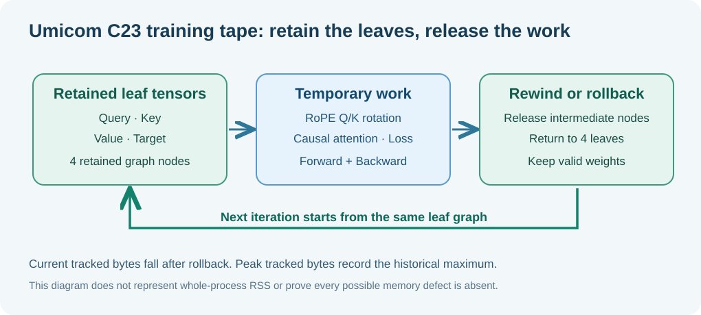

1. A training result must be correct and safely owned
Lesson 91 examined gradients. This lesson covers what happens when an operation runs out of its permitted memory, when a result needs to be discarded, and when the same tape is used repeatedly. These are engineering questions as important as the formula itself.
Think of an Umicom Notes editor. If saving a document fails halfway through, the application should not silently replace a complete document with a partial file. A training-tape operation follows a similar rule: publish the complete new tensor only after all required work succeeds.
2. Three memory numbers explained
Suppose the tape starts with 1,200 bytes of retained leaf tensors. A new operation temporarily needs 600 more bytes. If the permitted budget is 1,900 bytes, then it fits because 1,200+600=1,800≤1,900.
Current is the memory already retained, requested is the extra allocation, and budget is the maximum. The ≤ sign means “less than or equal to”. If the new request were 800 bytes, 1,200+800=2,000>1,900, so it should be refused.
Study Maths Unit 18 for a full example that does not assume prior programming knowledge.
3. What does rollback mean?
During a complicated calculation, the tape may temporarily create several tensor nodes. A node contains an intermediate result and sometimes saved data needed to calculate gradients. If a later step fails, we must return to a known good earlier graph.

The new budget regression sets a small memory limit through the **existing Framework API**, tries to assemble rotary attention and verifies that a failed attempt has not returned an incomplete result. It also checks that the tape's current tracked allocation and node count return to the exact saved baseline.
4. The peak does not decrease when memory is freed
The arrows show time passing. The temporary operation increases current usage, then rollback returns it to the starting value. Peak retains the highest historical usage, because it is a high-water mark.
A high peak does not automatically mean a memory leak. A stable current value is helpful evidence, but not proof that every allocation and pointer is safe.
5. Why repeat a graph 48 times?
The new rotary_real_tape_rewind test retains the same four input tensors and repeats a forward calculation, backward gradient pass and graph rewind 48 times. After each rewind it checks that only the original four leaf nodes remain.
| Checkpoint | Expected observation |
|---|---|
| Before a calculation | Four original leaf nodes retained |
| During attention and loss | More nodes and greater current tracked memory |
| After rewind | Original four nodes and the original current allocation restored |
| Across all 48 passes | Finite gradients and stable peak for this fixed graph shape |
The earlier learned-absolute-position decoder and its checkpoint compatibility policies are untouched. This is a training-tape component acceptance gate, not a new model.
6. Verify this with the native Framework APIs
/* Full executable test is in the Batch 91–92 Framework package. */
UmiAiTrainingTapeMemory before = {0};
UmiAiTrainingTapeMemory after = {0};
size_t checkpoint = 0U;
UmiStatus status = UmiAiTrainingTapeCheckpoint(tape, &checkpoint);
/* Check status before using any output. */
status = UmiAiTrainingTapeMemoryInspect(tape, &before);
/* Compose rotary attention, loss and backpropagation. */
status = UmiAiTrainingTapeRewind(tape, checkpoint);
status = UmiAiTrainingTapeMemoryInspect(tape, &after);
/* after.currentBytes should equal before.currentBytes. */checkpoint is a saved node count, not a decoder model checkpoint file. The names are similar, but their purposes differ. The code above is a teaching excerpt, not a complete function with error handling.
7. Run the full Batch 91–92 acceptance gate
Set-Location 'C:\umicom\Umicom-Applications'
$env:Path = 'C:\msys64\ucrt64\bin;' + $env:Path
cmake -S '.\framework\learning\native-llm\prefix-work' `
-B '.\build\windows-ucrt64-native-llm-prefix-debug' `
-G Ninja -DCMAKE_BUILD_TYPE=Debug -DBUILD_TESTING=ON
if ($LASTEXITCODE -ne 0) { throw 'Configure failed.' }
cmake --build '.\build\windows-ucrt64-native-llm-prefix-debug' `
--target umicom-ai-training-rotary-real-tape-gradients-test `
umicom-ai-training-rotary-real-tape-budget-test `
umicom-ai-training-rotary-real-tape-rewind-test `
umicom-native-llm-real-rotary-tape `
--parallel 2
if ($LASTEXITCODE -ne 0) { throw 'Build failed.' }
ctest --test-dir '.\build\windows-ucrt64-native-llm-prefix-debug' `
-R '^framework\.ai\.training\.rotary_real_tape_' `
--output-on-failure --no-tests=error
if ($LASTEXITCODE -ne 0) { throw 'Tape acceptance test failed.' }The exact build and machine-specific results must be recorded. A syntax-only compile check is not a production-tape run. A stable tape counter does not replace AddressSanitizer, UndefinedBehaviourSanitizer or leak checks.
8. Practice with worked answers
- Current memory is 1,250 bytes. A new operation needs 900 bytes, and the budget is 2,000. Can it proceed?
- After a failed calculation returns current memory to 1,250, should the recorded historic peak of 1,900 also become 1,250?
- Why do the tests check both a successful operation after lifting the budget and a failure while the budget is small?
Reveal the worked solutions
1. 1,250+900=2,150; this is above 2,000, so it must be refused. 2. No. Peak is the highest observed usage, not the current usage. 3. Both behaviours matter: failure must leave state intact, and the system must still work correctly once an acceptable request is made.
9. What is next?
A dedicated efficient rotary tape operator can be considered only after the existing operator passes numerical, rollback and lifetime gates against the real production library. It would then need independent parity and gradient tests. There is still no complete RoPE-trained LLM, and the current single-block KV research does not prove correct reuse for all multi-layer contexts.
For further study: tensor shapes, gradients and memory ownership.